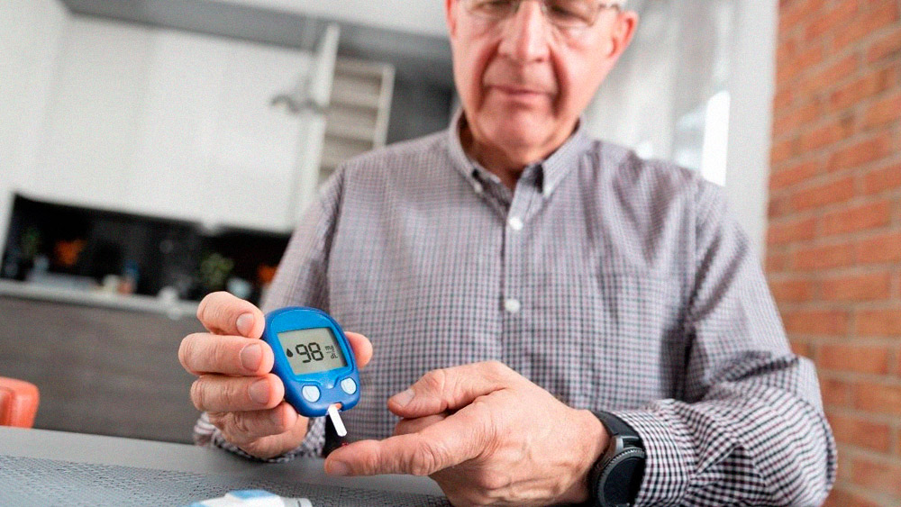
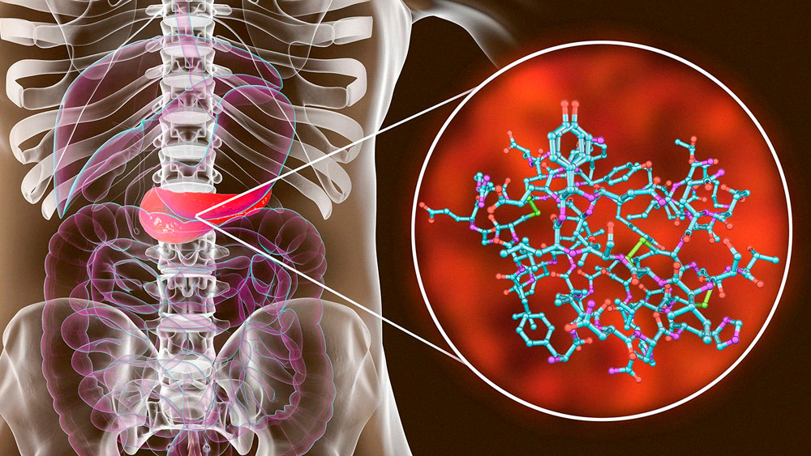
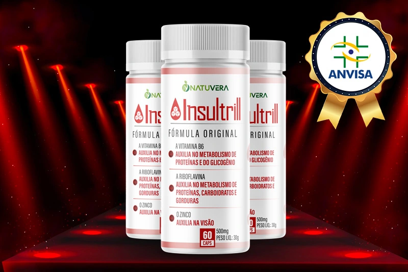
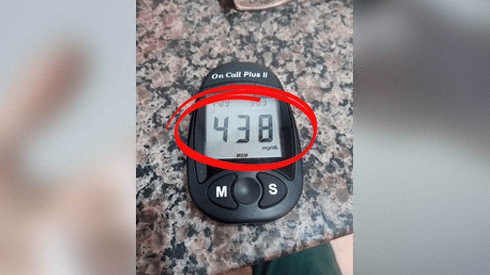
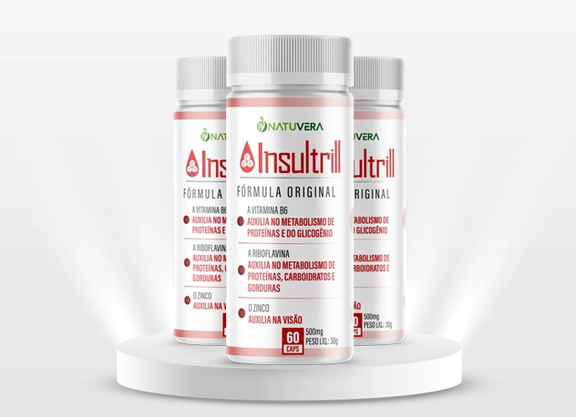

Por Carlos Galvão - Atualizado em 15 de Fevereiro 14:10h
Exclusivo: 9 a cada 10 Diabéticos conseguem se livrar da glicose alta 3X mais rápido com esse Método Natural.
Chega no Brasil Composto Eficaz que é Capaz de Reduzir Níveis de Glicose de Forma Simples e Rápida, Sendo capaz de acabar com a Necessidade de Aplicar Insulina ou usar Metformina.(ATENÇÃO: Não é Glifage).
Antônio Motta faz uso desse composto e já se livrou de vez desse problema.
Pele seca, visão embaçada, cansaço, fadiga, tontura, excesso de fome/sede, dificuldade em cicatrização, dor de cabeça e até náuseas e vômitos frequentes.
Esses são alguns dos sintomas da glicose alta no sangue, que além de tudo isso ainda destrói a autoestima e a autoconfiança de muitos Diabéticos, devido a dependência de remédios e as insuportáveis aplicações de insulina.
Cansado dessa situação?
Como se não basta-se, não manter sua glicose sempre controlada, ainda contribui para grandes complicações diante do (COVID-19), sem contar com o auto risco de cegueira, amputações, e até a morte.
Deixar de tomar aquela cerveja gelada com os amigos, comer aquele doce desejado ou aquela comida que você mais gosta, pelo simples fato de conter um auto índice glicêmico, é um sentimento muito triste.
Vanessa Galvan, 39 anos - Sofrendo as consequências de não ter se cuidado.
Essa pode ser a sua realidade como a de outros 15 milhões de brasileiros que sofrem de diabetes. Milhões de pessoas sofrendo com uma doença devastadora que NÃO é levada a sério como outras mais comuns.
86% dos diabéticos não conseguem manter o nível de glicose baixo.
De acordo com a sociedade Brasileira de Diabetes (SBD), 86% dos portadores da doença não conseguem manter sua glicose sempre em níveis equilibrados, e os que conseguem acabam seguindo uma restrição alimentar muito severa.
Como por exemplo ter que comer somente alimentos insossos e deixar de consumir todo tipo de bebidas que não sejam adoçadas com adoçante, para evitar assim a hipoglicemia.
Que ocorre devidamente pelo pâncreas, que deixa de produzir insulina em quantidade suficiente para processar o açúcar presente no corpo.
Insulina deixa de ser produzida pelo pâncreas e o paciente precisa receber insulina injetável.
Mas a verdade é que, se você não fizer nada de diferente, o problema pode piorar.
A glicemia alta pode ser fatal, principalmente por suas complicações renais, neuropatia diabética (lesão do nervos) e também por infartos silenciosos.
A cada dia que se passa sem o total controle da doença, não só aumenta os sintomas, mas também abre espaço para novos problemas como o (COVID-19) que aumenta seu risco de morte em até 85%.
É quase um caminho sem volta!
Diabetes uma doença silenciosa que atinge milhões de brasileiros...
Enquanto alguns sofrem...
Mas Enquanto algumas pessoas sofrem, outras vivem como se não tivessem a doença.
A carioca Rose Batista, de 59 Anos, delicia-se com o fato de ter seu quadro de diabetes quase que revertido, mesmo comendo o que tem vontade e tomando aquela cervejinha no final do dia.
A senhora Rose Batista, parece ter uma saúde de quem nunca teve diabetes. Mas afinal qual é o segredo?
Rose Batista conseguiu reduzir sua glicose com esse composto natural.
Mas nem sempre foi assim!
Rose conta que nem sempre foi assim. Ele relata que sofria com crises de náusea e tontura, sem contar com uma dor de cabeça frequente, e que veio descobrir sua diabetes logo após.
"De lá pra cá os sintomas e o desanimo só foram aumentando, eu comecei a sentir muita sede, fome e fraqueza. Além disso me sentia muito cansada, varias vezes minha visão ficava embaçada e minhas pernas formigando."
"Me privei de muita coisa, e mesmo assim tinha que tomar injeções de insulina diariamente. Pensei até em fazer cirurgia metabólica, mas não tinha dinheiro e também tinha medo, minha vida se tornou muito entediante."
"Eu Tinha muito medo do futuro, ainda mais sabendo que eu estava no grupo de risco do COVID-19 e tendo 3 filhos ainda adolescentes."
- Desabafou Rose Batista
A preocupação era constante com as taxas altas da sua Glicose.
Recursos paliativos e seus perigos
Assim como Rose, a maioria das pessoas acredita que o único caminho para eliminar os sintomas causados pela diabetes seja através de cirurgias ou injeções de medicamentos.
Esses métodos possuem um efeito imediato e realmente funcionam para muitas pessoas, mas além dos sintomas voltarem com o tempo, ainda trazem riscos para a saúde, são dolorosos, podem deixar cicatrizes e são extremamente caros.
A boa noticia veio quando uma equipe americana de bioquímicos, liderada pelo endocrinologista Dr. Andrew Clark conseguiu unir em uma fórmula biofuncional, os 15 principais ativos que estimulam o funcionamento do pâncreas e no metabolismo glicêmico, reduzindo em torno de 82% os sintomas da Diabetes.
Dr. Andrew Clark médico endocrinologista.
Em Março de 2019 o Dr. Andrew e sua equipe comemoraram o sucesso desta fórmula que combina 20 ativos em formato de capsula, que através de uma nanotecnologia, torna as partículas do composto tão pequenas, que elas são capazes de PENETRAR em níveis mais profundos do pâncreas e agir diretamente nas células produtoras de insulina.
6X mais controle do Diabetes!
Insultrill oferece um incrível controle do açúcar no sangue para homens e mulheres.
A fórmula foi batizada com o nome de Insultrill e ela é composta pela fusão dos extrato de Oliva, Morosil, extratos de Cranberry, Coezina Q10, Arginina, tocoferol, D-alfa-tocoferol, Colecalciferol, taurina, picolinato de cromo, ácido ascórbico, zinco e mais de 8 vitaminas do Complexo B e Magnesio, em dosagens específicas para alta eficácia no combate a diabetes.
Esses componentes penetram no pâncreas, ativando a produção de insulina e agindo imediatamente no alivio dos sintomas. Apesar de ser um produto novo no Brasil, o Insultrill já vem sendo usado nos Estados Unidos Há mais de 4 anos.
Insultrill fórmula totalmente natural!
Uma nova esperança para Rose Batista.
Esse tratamento inovador e muito mais acessível gerou uma nova esperança para grande parte da população Brasileira que sofre com a diabetes.
Ao saber deste novo tratamento, Rose Batista conta que ficou tentada em testar o produto.
"Comecei a perceber resultados logo no primeiro uso. Ele me deu uma sensação de alivio imediato no corpo, deixou muito mais leve, eliminou o embaçamento nas vistas e acabou com aquele cansaço. Eu tive que usa-lo de manhã e á noite."
"Eu não podia acreditar no que meus olhos estavam vendo. Minha glicose voltou a ser como era antes da diabetes, sem nenhuma dor."
"Eu fiquei muito impressionada. O efeito é incrível! Hoje posso comer normalmente, até minhas crises de ansiedade passaram, e não estou mais no grupo de risco do COVID-19. Não consigo nem explicar em palavras como estou feliz."
- Comenta Rose Batista
Insultrill é tudo isso mesmo? Fizemos o teste!
Para o teste ser mais eficaz, convidamos um paciente diabético, acompanhado do doutor Eduardo Martins e da nutricionista Priscila Moura, enviamos 1 frasco para o paciente e fizemos todo acompanhamento online por conta do COVID-19.
A partir de agora siga o resultado do teste:
GLICOSE NO 1º DIA
Resultado do teste no paciente no primeiro dia.
Para nossa surpresa o paciente estava com a glicose extremamente alta, mas decidimos continuar.
Ele nos relatou que sentia tremedeira e fortes dores no corpo, então tomou 1 capsulas de manhã e 1 capsula a noite.
GLICOSE NO 2º DIA

Resultado do teste no paciente no segundo dia.
No segundo dia, a glicose reduziu bastante mas ainda continuava alta, o paciente nos relatou que ainda estava com a tremedeira mas que a dor diminuiu bastante.
Pedimos para que ele tomasse mais 1 capsulas de manhã e 1 capsulas a noite, e assim ele nos relatou que foi feito.
GLICOSE NO 3º DIA

Resultado do teste no paciente no terceiro dia.
No terceiro dia para a surpresa de todos a glicose do paciente estava totalmente controlada. Ele nos relatou que a tremedeira tinha passado e que suas fortes dores também.
Obs: Nos três dias de acompanhamento o paciente não fez aplicação de insulina nem fez mudanças na alimentação, inclusive 1 dia antes.
E assim concluímos o teste no 3° dia, com o paciente satisfeito com o resultado e disposto a continuar utilizando o insultrill.
Resultados reais de pessoas reais


Dificilmente recomendamos algum produto no nosso site ou na revista, mas com as evidências de que esse produto realmente funciona e a satisfação garantida, sentimos que nossos leitores iriam gostar da dica.
Além disso, a empresa responsável pela venda do insultrill no Brasil confia tanto no seu produto, que oferece uma garantia de 100% de satisfação.
Importante: Segundo o fabricante, insultrill só esta disponivel para compra através do site oficial e não é vendido em farmácias. De acordo com a empresa, isso é porque a demanda pelo produto está tão alta, que o pouco estoque que eles têm é vendido em poucas horas através do site.
Garantia
Além disso, o insultrill confia tanto no seu produto, que oferece uma garantia de 100% de satisfação, ou seja, o cliente pode testar o produto por 30 dias e se não gostar, basta entrar em contato com a empresa por e-mail ou Whatsapp e solicitar a devolução integral do dinheiro pago. Risco zero para o consumidor.
Aproveite somente hoje desconto de até 40% + Frete Grátis a partir de agora!
Oferta disponível até:
O nosso portal reservou alguns frascos de insultrill para nossos leitores. Você ganha até 40% de desconto + Frete Grátis e pode parcelar em até 12x.
Atenção essa promoção é de lançamento, válida apenas enquanto durar o estoque. Tenha vantagem com nosso link exclusivo e ganha até 40% desconto e parcelamento em até 12x clicando no link abaixo:
 EXPERIMENTE HOJE MESMO28 COMENTÁRIOS
Os comentários são de responsabilidade exclusiva de seus autores e não representam a opinião deste site. Se achar algo que viole os termos de uso, denuncie. Leia as perguntas mais frequentes para saber o que é impróprio ou ilegal.
Este conteúdo não recebe mais comentários.


Célia Fernandes
Minha mãe tem Diabetes, ela toma insulina de manhã e de noite, vejo o sofrimento dela e quero ajudar ela a sair dessa vida triste, comprei esse produto tem poucos dias mas ela já tomou por 1 semana e sua Glicose reduziu bem de 450 para 197 sem uso de insulina, nossa experança aumentou muito!.
Curtir Responder Denunciar
Cida Rezende
Tenho diabetes tipo 2, eu tomava 3 tipos de remédio todos os dias, mesmo assim sempre estava alta, conheci insultrill pela internet e resolvi ariscar, comprei 3 potes e começei a tomar, tem pouco mais de 2 meses e minha vida mudou muito, cortei todos os medicamentos, emagreci 5kg e minha glicose ficou controlada de forma natural.
Curtir Responder Denunciar